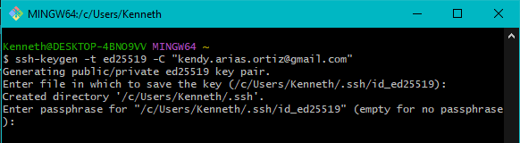
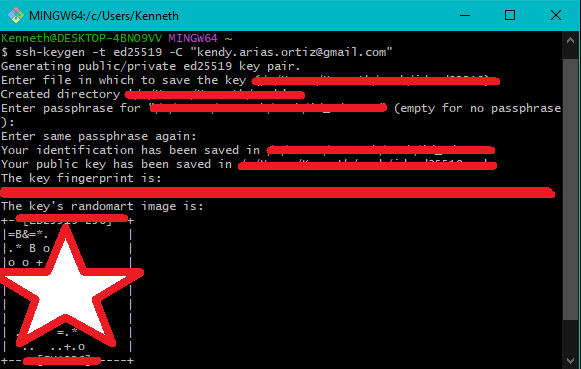
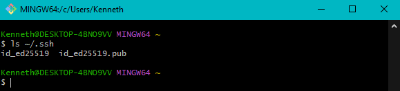
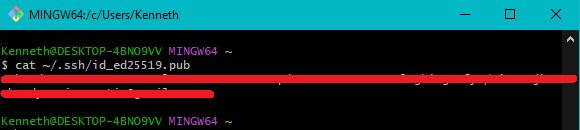
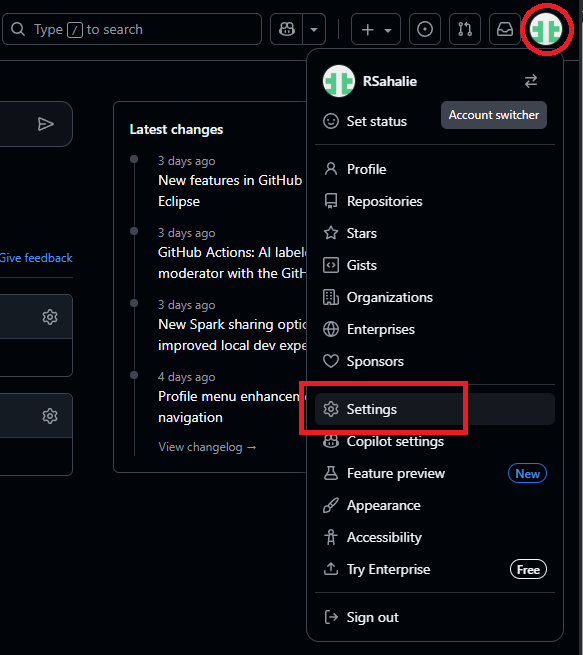
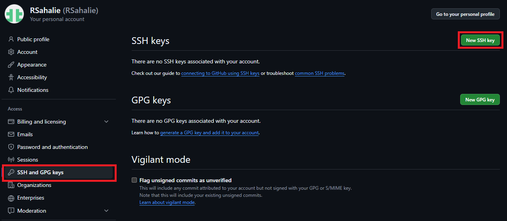
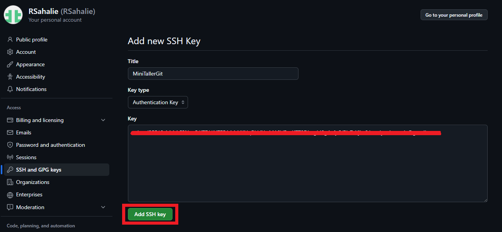
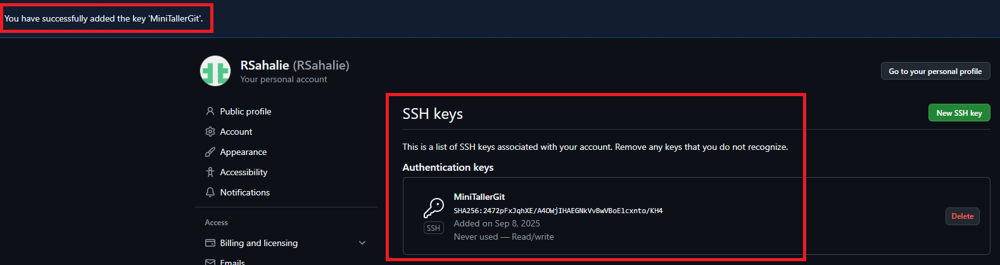

Generar una llave SSH
- Abre la terminal (Linux/macOS) o Git Bash (Windows).
- Genera la llave SSH con tu correo de GitHub:
ssh-keygen -t ed25519 -C "tuemail@ejemplo.com"
- Presiona Enter para aceptar la ruta por defecto y, si quieres, agrega una passphrase. 
- Se creará una llave con su respectiva imagen: 
- Verifica que la llave se creó:
ls ~/.ssh - Copiar la llave pública:
cat ~/.ssh/id_ed25519.pub
Añadir la llave SSH a GitHub
- Accede a GitHub → Configuración → SSH and GPG keys. 
- Haz clic en New SSH key. 
- Pega la llave pública que copiaste en el campo "Key". 
- Asigna un nombre descriptivo y guarda. 
Probar la conexión SSH
ssh -T git@github.comSi todo está correcto, GitHub te dará un mensaje de bienvenida.